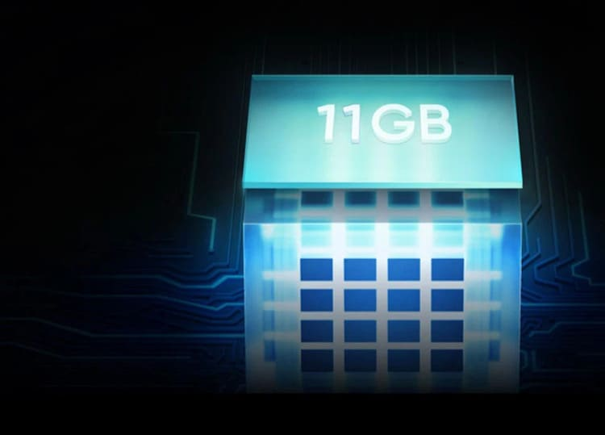

Cách khắc phục lỗi CrowdStrike
Sự cố bắt nguồn từ bản cập nhật driver cho phần mềm Falcon Sensor của CrowdStrike, một thành phần cốt lõi của nền tảng bảo mật Falcon. Bản cập nhật này được phát hành như một phần của quy trình triển khai định kỳ đã gây ra xung đột hệ thống, dẫn đến lỗi màn hình xanh 0x50 hoặc 0x7E trên các máy tính Windows.
Đọc thêm...
Cách kiểm tra điện thoại có hỗ trợ 5G hay không 2024
Trong thời đại công nghệ số, việc kiểm tra khả năng hỗ trợ 5G trên điện thoại di động đã trở nên quan trọng hơn bao giờ hết. Với sự phát triển mạnh mẽ của mạng 5G, người dùng cần biết cách để xác định liệu thiết bị của bạn có thể tận dụng tốc độ và kết nối ổn định của công nghệ này hay không. Cách kiểm tra như thế nào, cùng nhau tìm hiểu qua bài viết dưới đây nhé!.
Đọc thêm...
Cách set RAM ảo trên Windows 11.

Bộ nhớ ảo, hay RAM ảo, là một chức năng quan trọng của hệ điều hành, cho phép sử dụng một phần ổ đĩa cứng như một phần mở rộng của RAM vật lý. Trong trường hợp thiếu hụt RAM, hệ thống máy tính sẽ tự động chuyển sang sử dụng không gian trên ổ cứng để tạo thêm bộ nhớ ảo, giúp việc vận hành các chương trình đòi hỏi nhiều RAM hơn dung lượng có sẵn trở nên khả thi.
Đọc thêm...